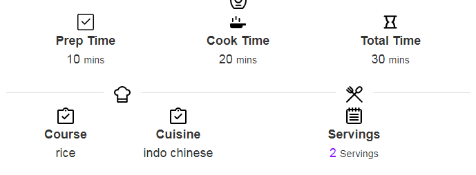

INGREDIENTS
for cooking rice:
- 2 cup basmati rice
- 2 tsp oil
- 1 tsp salt
- water for soaking & boiling
for fried rice:
- 4 tbsp oil
- 4 clove garlic (finely chopped)
- 1 onion (finely chopped)
- 8 tbsp spring onion (chopped)
- 0.5 carrot (finely chopped)
- 4 tbsp cabbage (finely chopped)
- 4 tbsp peas / matar
- 10 beans (chopped)
- 0.5 capsicum (finely chopped)
- 1.5 tsp salt
- 4 tbsp soy sauce
- 2 tbsp vinegar
- 2 tsp pepper (crushed)
- 0.5 tsp salt
INSTRUCTIONS
- firstly, in a large kadai heat 2 tbsp oil and stir-fry 2 clove garlic.
- also, saute ½ onion and 2 tbsp spring onion until they sweat.
- furthermore add vegetables of your choice like ¼ carrot, 2 tbsp cabbage, 2 tbsp peas, 5 beans, ¼ capsicum and ½ tsp salt.
- stir fry on high flame without overcooking vegetables.
- now add 2 tbsp soy sauce and 1 tbsp vinegar. stir-fry until the sauce is combined well.
- keeping the flame on high, add cooked rice.
- also, add 1 tsp pepper and ¼ tsp salt. adjust the salt as soy sauce has salt.
- stir-fry by mixing well making sure rice grains won't break.
- further, add 2 tbsp spring onions and mix well.
- finally, enjoy veg fried rice with gobi manchurian.